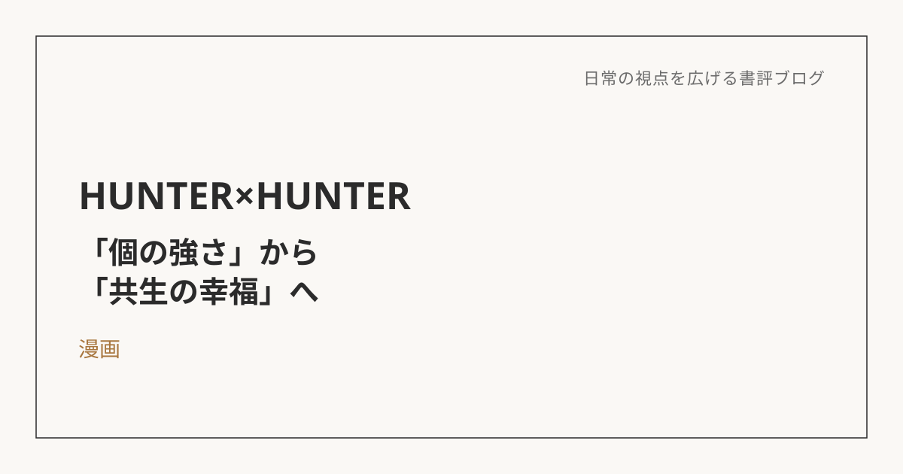

HUNTER×HUNTER――「個の強さ」から「共生の幸福」へ
この本について
『HUNTER×HUNTER』（冨樫義博）の中でも、キメラアリ編に登場する「メルエム」というキャラクターは、単なる敵役という枠に収まらない、独特の存在感を持っている。生まれながらにして絶対的な強さを持つ王として君臨する彼が、囲碁ならぬ「軍儀」という盤上遊戯を通じて、人間の少女コムギと出会い、変わっていく。今回はこのメルエムの物語を軸に、「個の強さ」と「他者との共生」というテーマについて書いておきたい。
「個」として最強だったメルエムに、足りなかったもの
物語の序盤、メルエムは誰にも屈しない絶対的な強者として描かれる。他者は彼にとって、エサか道具でしかない。けれど、その圧倒的な強さの中身は、どこか空っぽだった。彼には「名前」はあっても、自分だけの輪郭のようなものがなかった。
転機になったのは、彼が勝てない相手であるコムギとの、論理を超えた関わりだった。この出会いを通じて、メルエムは「最強の個であること」だけでは満たされない何かに気づいていく。
「強さ」ではなく、「同じ時間」が幸福だった
メルエムが最終的に見出した幸福は、王として君臨し続けることではなく、コムギと軍儀を打つという、何気ない時間を共有することだった。人間は一人では、自分がどんな存在なのかを本当の意味では知ることができない。他者という鏡があって初めて、自分の輪郭が見えてくる。この物語を読みながら、強さや成果だけでは測れない幸福のかたちがあるのだと、あらためて実感させられた。
「For」から「With」への転換
このテーマは、自分自身の家族との関わり方を振り返るきっかけにもなった。これまでは「個人としての力をつけて、家族を養う」というスタンスを、どこかで正義のように捉えていた。けれど、その責任感は同時に、「自分が解決しなければ」という孤独や、独りよがりな頑張りも生んでいたように思う。
「家族のために（For）」何かを成し遂げようとするのではなく、「家族とともに（With）」同じ時間や課題を共有する。守る人と守られる人という縦の関係ではなく、対等に円卓を囲むような横の関係。弱さや悩みを隠さずに共有することも、家族を単なる守るべき対象から、共に歩むパートナーに変えていく一つの方法なのだと思う。
「プロレス」ではなく「ダブルス」というマネジメントの発想
このテーマは、仕事でのチームとの関わり方にもつながっている。これまでは、成長のためにはある程度の厳しさやプレッシャーが必要だと考え、あえて厳しい指摘をすることを意識してきた。ただその結果、チームの中に萎縮した空気や、必要以上の上下関係が生まれてしまっていた側面もあったように思う。
ここで参考になったのが、「プロレスからダブルスへ」という発想の転換だ。プロレス的な関わり方は、「自分 対 相手」という構図で、相手を打ち負かしてから課題に向かわせようとする。一方、ダブルス的な関わり方は、「自分たち 対 課題」という構図で、最初から横並びで一緒に課題に向き合う。「お前がダメだ」ではなく「この事実が課題だ」というふうに主語を変えるだけでも、同じ指摘が持つ響き方はまったく変わってくる。
強さを否定せず、それでも他者と分かち合う
「個の強さ」を追求すること自体は、決して否定されるべきものではない。ただ、それだけでは幸福には至らないのだということを、メルエムというキャラクターの生き方が教えてくれた。強さを脇に置き、他者と同じ目線で時間や課題を分かち合うこと。家族においても、仕事のチームにおいても、それこそが持続可能な幸福と成果を両立させる鍵なのだと思う。
※本記事はNotionに書き溜めた読書メモをもとに、AIの編集サポートを受けて構成しています。